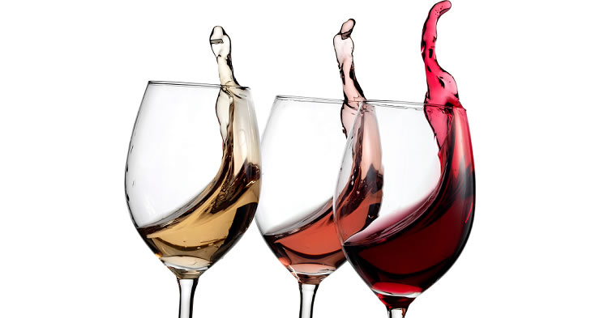

La Cata
"Consiste en probar con atención un producto cuya calidad queremos apreciar; se trata de someterlo a nuestros sentidos y conocerlo buscando sus diferentes defectos y cualidades, con el fin de expresarlos; la cata es estudiar, describir, definir, juzgar y clasificar" Peynaud

Cómo catar el Vino
La cata paso a paso:
- Con la copa inclinada sobre un fondo blanco, observe el color y la intensidad del vino y su aspecto (limpio, brillante). Haga girar la copa y verá que se forman una gotas que caen por las paredes interiores del cristal. Estas "piernas" o "lágrimas" le darán una idea del cuerpo, textura y graduación alcohólica del vino.
- Sujete la copa por el pie y literalmente introduzca la nariz en ella. Inhale profundamente y trate de percibir sus aromas. Haga girar la copa para liberar los compuestos aromáticos y repita la operación. Compare los aromas percibidos con otros olores conocidos. Si huele a fruta, intente precisar cuáles son esas frutas ¿Son blancas o rojas? ¿Son tropicales o de bosque?
- Este es el momento en que se confirma lo que se ha captado en las otras dos fases. Tome un sorbo de vino lo suficientemente grande como para impregnar toda la lengua. Aspire una pequeña cantidad de aire y haga girar el vino dentro de la boca. Intente descubrir los sabores y texturas del vino, así como la sensación que deja. Cuando haya descubierto todo lo posible, tráguelo o escúpalo, si va a seguir catando.
- Disfrute y sienta la naturaleza de nuestras tierras, los aromas de nuestros frutos y los colores intensos que nos brinda.